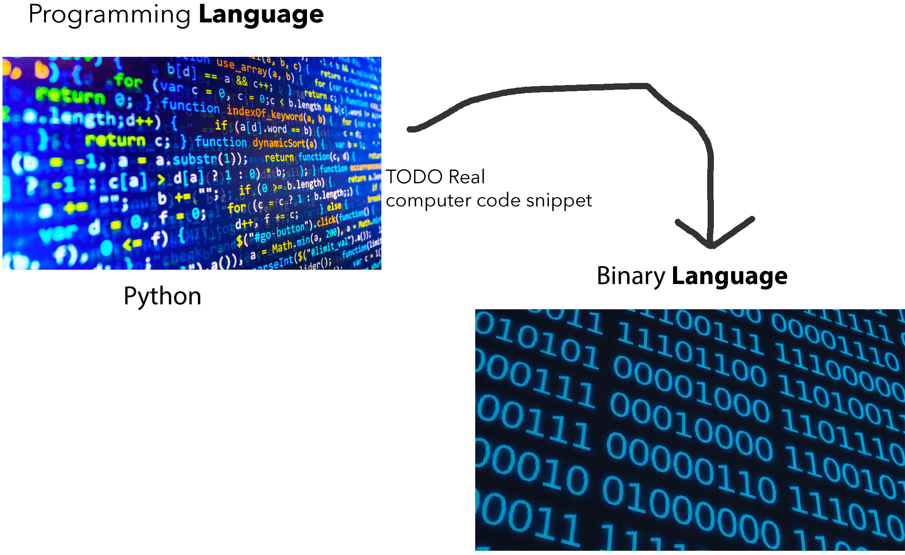

It is all 1s and 0s
“In the end, it is all 1s and 0s.” It may be a comment you have encountered, but how could that be? Have you ever written just 1s and 0s?
We hear of people using languages like Python or Javascript. When we look at their screens, what they write are a series of statements that has a mix of english characters. Again, where are the 1s and 0s?
Let's take a step back and look at the first line of code most people write.
# Python
print("hello world!")
// Javascript
console.log("hello world!");
/*
* The computer will print out "hello world!" on the command-line interface.
*/ TODO Update image design
Looking a the image above, we can see that hello world! compiles* into 1s and 0s. You will also be able to see that it is a different set of 1s and 0s for Python and Javascript.
This will drive home our first principle, the power of language. In and out of a computer we can represent the same ideas with different letters, symbols, and even objects. This is foundational to code, but even to communicate with others.
Terminology
Compile
Compiling refers to the process of taking code in one language (typically easier to read) and outputting it in another language or another version of that language (typically harder to read).
print("hello world!") in Python is easier to read than a series of 1011101011010111 ... (it would exceed over 1000 characters!).
Command-Line Interface
It is where the user can write commands for the computer to execute. Print statements are used to display information back to the user.
We generally use a graphical user interfaces with mouse or touch events and menus, but a lot of programming is still done with a command-line interface.